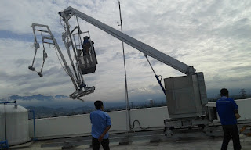
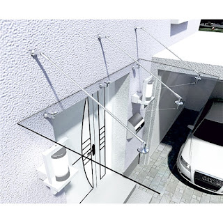
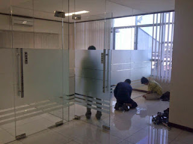
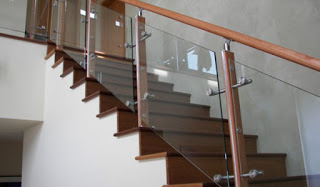
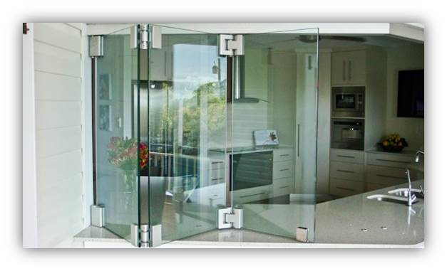

Kaca yakni kebutuhan yang krusial bagi sebuah industry maupun gedung. Kaca kian melengkapi bangunan agar kelihatan lebih menawan dan mempunyai skor keindahan bila di pandang orang. Banyak tipe dari kaca yang bisa di pakai untuk banguan ataupun rumah tinggal.
Sekarang telah hadir pelbagai maca macam kaca yang bisa dijumpai, tiap kaca mempunyai fungsinya masing-masing. Bisa untuk system keamanan, estetika dan masih banyak yang dapat di dapatkan dari pemasangan kaca. Jenis kaca-kaca tersebut diantaranya adalah kaca tempered, kanopi kaca, kaca frameless, kaca cermin, railing kaca dan masih banyak tipe kaca lainnya yang dapat anda dapatakan dan anda aplikasikan pada bangunan. Tiap kaca memiliki fungsi masing-masing yang membuat banyak orang semakin mebutuhkannya dari hari ke hari. Berikut ini sedikit penjelasan mengenai berbagai ragam kaca dan fungsi kaca dan juga parket lantai kayu jati yang dapat anda peroleh.
Jasa Maintenance Kaca Tasikmalaya

Jasa maintenance kaca Tasikmalaya menawarkan pelayanan perawatan bahan bangunan yang terbuat dari kaca. Dis.or.id mempunyai kekuatan spesialis yang bisa cakap membersihkan gedung pencakar langit yang bangunannya terbuat dari kaca.
Kini juga hadir maintenance kaca Tasikmalaya untuk membersihkan kaca berbentuk melengkung. Dis.or.id menyiapkan segala ragam kaca cocok keperluan dikala ini. Bila juga dengan warna dan bentuk kaca.
Tak anda sedang membutuhkan maintenance kaca Tasikmalaya Tasikmalaya, anda bisa lantas mengunjungi dis.or.id. Untuk itu, alat-alat seharusnya komplit sehingga kami sanggup membersihkan seluruh sudut gedung. Dis.or.id juga sudah mempersiapkan dengan berjenis-jenis alat yang bisa diterapkan untuk menjangkau semua sudut gedung, sekalipun gedung Anda benar-benar tinggi. Oleh karena itu, dis.or.id cuma memilih orang-orang yang amat profesional dan sudah mempunyai pengalaman dalam hal maintenance kaca Tasikmalaya .
Info Pemesanan Selengkapnya
Google Maps: https://www.google.com/maps/d/u/0/viewer?mid=1p_FromQbeWpcNOhOEjbFkVYqH9Hbcdtt&ll=-7.27380280025364%2C112.65243155000007&z=18
Note: https://www.facebook.com/notes/distributor-of-industrial-supply/kontraktor-jasa-maintenance-kaca-gedung-rusak-pecah-kusam-dlsb/1785712251728654/
Event: https://www.facebook.com/events/1976326045988519/
Portfolio Produk: https://www.facebook.com/1681607345472479/photos/?tab=album&album_id=1712630562370157
Distributor & Supplier Kaca Shower

Pintu Kaca Shower pada kamar mandi merupakan salah satu alternatif yang baik untuk desain interior kamar mandi modern. Dan sensasi mandi menjadi lebih asik untuk dirasakan. Tak cuma cantik tetapi kaca shower bisa menjadi kaca pembatas antara lantai kering dan basah pada kamar mandi. Selain ini akan berakibat kepada biaya yang akan dikeluarkan untuk membayar tukang.
Tak anda sedang mencari kaca shower untuk kamar mandi, anda bisa lantas mengunjungi dis.or.id. Disana anda bisa mendapatkan kaca shower yang pastinya layak untuk kamar mandi anda. Tidak terbaik dan harga terjangkau. Anda dapat buktikan sendiri.
Distributor, Supplier & Jasa Pasang Kanopi Kaca
Salah satu ragam kanopi kaca yang dapat anda aplikasikan pada atap yaitu atap kaca skylight yang merupakan kanopi kaca dalam wujud jendela horizontal atau kubah yang lazimnya ditempatkan di atap bangunan yang mempunyai maksud untuk pencahayaan ruangan. Sekiranya akan memberikan kesan lapang dikala berada di kamar mandi, mandi dengan shower akan memberikan kesegaran tersendiri dibanding kamar mandi dengan bak mandi. Canopy kaca dengan atap kaca memang sebuah bangunan yang asangat elgan untuk jaman modern seperti kini ini dengan harga yang betul-betul lumayan bila di bandingkan kanopi atap biasa. Tak cuma sekedar tembus pandang. Ada beberapa alasan mengapa Pintu Kaca Shower banyak diaplikasikan salah satunya ialah kaca lebih nampak bersih dan rapi dan juga lebih gampang dalam perawatannya. {Seandainya tembus pandang, kaca mengabsorpsi sinar yang masuk sehingga kian tebal kaca karenanya kian sedikit cahaya yang bisa melaluinya, maka sifat transparannya makin berkurang.|Di samping pintu kaca shower akan membikin kamar mandi kecil nampak lebih besar.
Ini menonjol dari bahan material yang di gunakan dalam pembuatan kanopi kaca. Dis.or.id juga menyediakan jasa pemasangan kanopi kaca yang tentunya dengan bantuan tenaga professional yang sudah berpengalaman. Setelah kaca untuk atap kanopi cukup digemari. Tak anda sedang mencari kanopi kaca, anda bisa seketika mengunjungi dis.or.id.
Jasa Pemasangan Kaca Tempered

Kian banyak orang yang mau memakai kaca ini. Sekarang alat khusus untuk memotong jenis kaca yang satu ini. Maka dari itu, mereka sudah mulai suka variasi kaca yang satu ini. Banyak bagian properti yang bisa dibuat dengan bahan berupa kaca tempered. Kini, kian banyak properti yang mengaplikasikan kaca tempered.
Untuk itu, dis.or.id hadir sebagai penyedia jasa pemasangan kaca tempered yang sudah berpengalaman. Harga untuk tiap pemasangan dijamin termurah dan hasil pengerjaan yang layak dengan harapan anda. Bukan sembarang alat yang diaplikasikan untuk memotong kaca tempered layak dengan kebutuhan. Apabila aman kaca tempered juga cakap memberikan kesan estetika yang sangat bagus dibandingi dengan kata macam lainnya. Harga yang ditawarkan untuk pemasangan kaca tempered benar-benar murah.
Distributor & Supplier Pintu Kaca

Pintu kaca sungguh-sungguh berguna bagi anda yang berharap menabah kesan gedung lebih cantik dan mewah. Kian banyak figur pintu kaca ketika ini seperti kaca tanpa pigura atau frameless yang banyak digunakan untuk pintu perkantoran dan pusat perbelanjaan. Ada juga pintu kaca dengan frame dengan desain yang berbeda seperti folding dan sliding. Kini hal yang demikian dapat terbuat dari kayu atau aluminum. Tersedia beberapa jenis kaca dengan kualitas yang terbaik, mulai dari kaca tempered hingga yang non-tempered.
Kalau ahli yang amat profesional sehingga betul-betul siap untuk menghasilkan pintu kaca seperti apa yang berkeinginan Anda miliki.
Dis.or.id siap untuk membikin pintu kaca layak dengan apa yang Anda inginkan. Dis.or.id mempunyai energi yang telah betul-betul profesional di bidang ini.
Jual Kaca Cermin

Kaca cermin bisa diciptakan aksesoris untuk mempercantik interior rumah Anda. Lihat saja banyak produk cermin yang dijadikan dengan desain unik dan menarik. Banyak desain menarik dari cermin yang dapat Anda pilih di sini. Untuk bangunan bertingakat, khususnya digunakan pada tipe dinding kaca. Cermin dengan bermacam ukuran juga tersedia. Ada cermin yang didesain unik seperti penyerupai daun, oval, dan lain sebagainya. Malah juga komponen tepi. Kini perlu dilihat juga merupakan apakah Anda berharap memiliki kaca cermin desain minimalis atau yang elegan. Cermin minimalis memiliki siku.
Jikalau sebagai bahan untuk pintu kaca, kaca cermin ini juga masih digunakan sebagai aksesoris cermin. Artinya, cermin hal yang demikian tidak mempunyai frame atau bingkai. Banyak orang yang lebih menyukai dengan desain kaca cermin minimalis. Atau barangkali Anda mengharapkan kaca cermin yang lantas bisa ditempel pada bagian furniture tertentu seperti pintu lemari. Sementara itu, Anda yang berada di dalam ruangan dapat mengamati orang lain yang ada di luar. Tersedia kaca cermin dengan beragam ukuran yang dapat anda pesan di dis.or.id. Disana anda dapat menerima kaca cermin yang cocok dengan kemauan anda.
Jasa Pemasangan Railing Kaca

Tak Anda ingin mempunyai rumah dengan desain interior minimalis, betul-betul tepat dikala bagian tangga dan juga balkon mengaplikasikan railing kaca ini. Anda bisa memilih desain sesuka hati Anda. Anda bisa melakukan eksplorasi dengan menggunakan bahan berupa kaca ketika berharap mempunyai rumah dengan desain minimalis. Mereka tak lagi membikin pagar tangga atau balkon dari kayu. Sekiranya itu, dari segi keamanan, kaca tempered ini juga pas sekiranya menjadi pilihan Anda. Malahan juga bahan yang diterapkan.
Anda bisa memilih kaca dengan kualitas terbaik. Tentukan juga desain railing kaca. Ini tipe kaca yang amat kuat. Apabila itu, kaca ini bisa pecah tapi tidak memunculkan pecahan yang runcing tapi pecahan kecil-kecil dan lembut. Dengan demikian, pecahan kaca tempered tak akan melukai orang yang terkena pecahan. Pecahannya betul-betul kecil dan lembut sehingga tak akan melukai siapa saja yang terkena pecahan. Aluminum umumnya yang diaplikasikan sebagai railing atau bingkai. Bila memberikan kesan minimalis pada interior rumah, ini juga membuat rumah Anda kelihatan lebih nyaman untuk dijadikan tempat tinggal.
Railing kaca dengan kualitas terbaik bisa anda dapatkan di dis.or.id. ukuran dan ketebalan railing kaca sudah tersedia. Tentu dengan harga yang murah tapi konsisten berkelas.
Distributor & Supplier Pintu Lipat Kaca

Seandainya ruang makan bersebelahan dengan taman, Anda dapat sekat dengan pintu lipat kaca ini. Melainkan diakui bahwasannya ada jenis kaca yang harganya di bawah kaca tempered. Namun, Apabila Anda hitung kembali, selisih harganya tidaklah terlalu banyak.
Muncul pertanyaan kenapa Seharusnya memakai kaca tempered. Dengan demikian, sinar matahari di siang hari bisa masuk ke dalam ruangan. Dan dengan adanya pintu kaca ini, keamanan kian bagus.
Jasa Pemasangan Kubikel Toilet

Kubikel kaca banyak ditemui di bermacam-macam tempat besar seperti perkantoran, gedung, bahnkan sekarang juga dapat di gunakan untuk hunian rumah.
Dengan menggunakan kamar kecil kubikel tentnya WC yang anda miliki Menonjol lebih elegan dan mewan jauh dari kesan kumal. Kaca juga dapat menjadi solusi estetika kamar mandi, namun juga bisa jadi keadaan sulit sekiranya Anda menerapkan material dan tempat yang salah. Mandi kubikel juga memberikan hal yang efisien dan efektif dalam pembagian space kamar mandi yang kecil.
Tersedia beragam ukuran serta ketebalan dari kubikel yang dapat anda pilih pantas dengan yang anda inginkan.
Kaca shower yang di jual di jamin kaca shower yang memiliki kwalits terbaik dan berkualitas tinggi.
Distributor & Supplier Partisi Kaca
Partisi kaca telah tak lagi dianggap sebagai hal yang aneh lagi. Telah banyak properti yang bahan berupa kaca sebagai partisi. Anda dapat lihat di sentra perbelanjaan modern, hotel, dan juga perkantoran. pemasangan lebih murah karena membutuhkan waktu yang tidak lama untuk memasang partisi yang terbuat dari kaca hal yang demikian. Kualitas, untuk space yang tidak seperti itu luas, Anda bisa menyekat menjadi beberapa ruangan dengan partisi ini tanpa merasa ruangan menjadi sungguh-sungguh sempit. Selain itu, tentukan juga variasi kaca yang apakah transparan, semi transparan, atau kaca cermin yang membikin ruangan benar-benar privat. Selain itu, contoh partisi kaca ada yang frameless (tanpa frame) dan juga ada yang mengaplikasikan bingkai. Bila anda sedang mencari distributor dan supplier partisi kaca yang memiliki kaca dengan terbaik, anda tinggal mengunjungi dis.or.id.